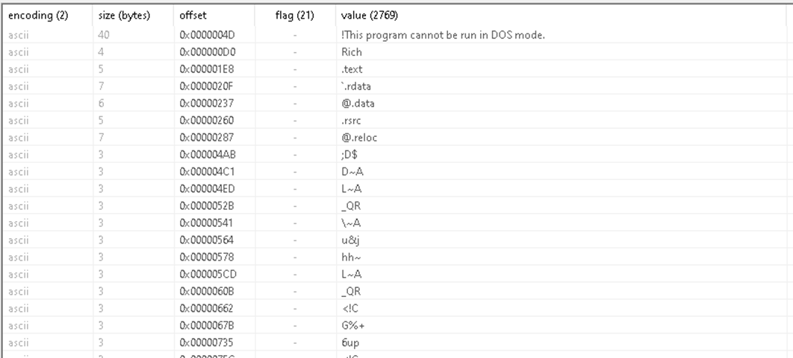
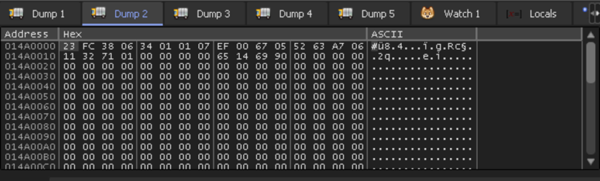
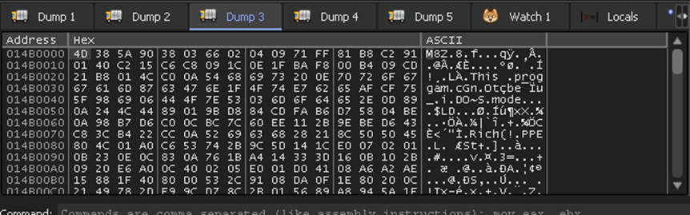
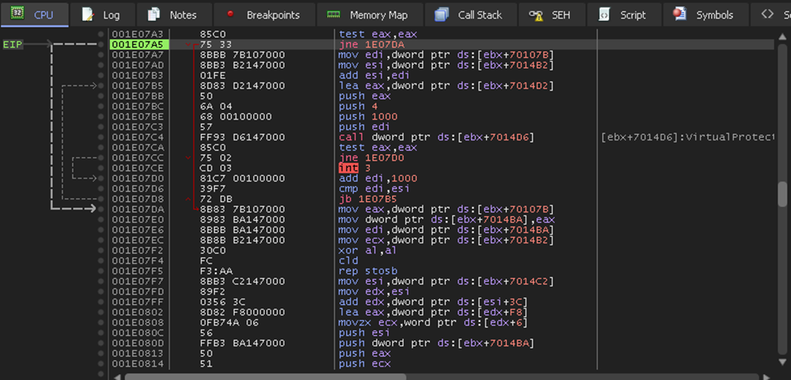
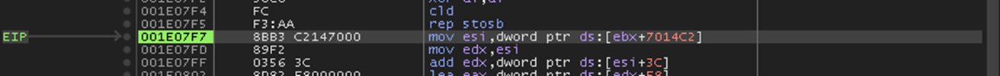

Analyzing IcedID Loader - Zero2Automated
Introduction
In this post, I will examine the sample provided in the Zero2Automated: Advanced Malware Analysis course, which is introduced when we reach the second chapter of the course, specifically the second stage. That said, let's get started.
Static Analysis
Packing Detection
An initial analysis of the sample with PE Studio makes it possible to extract several interesting things.
One of the first aspects to notice is that the entropy value is relatively high, suggesting some level of data compression or obfuscation,
but not high enough to clearly indicate heavy packing or encryption.

In the debug section, a file path is present that serves as a strong indicator that the sample is likely packed.
The path appears to be meaningless and does not correspond to a valid location, suggesting that it is merely junk data.

In the library section, the sample loads only two libraries. This limited set of imported libraries is another indicator that the binary is likely packed.

In the strings section, there are strange strings and this is another indicator of packing.

Continuing with the strings section, several compiler-related strings are present.
Their presence, combined with the other observations, serves as an additional indicator that the sample is packed.

Unpacking
The sample is opened in xdbg to perform unpacking, with the goal of identifying the tail jump that transfers execution to the Original Entry Point (OEP) or, more generally,
to locate the unpacked executable code in memory. Breakpoints are set on VirtualAlloc, VirtualProtect, CreateProcessInternalW
(or CreateProcessW on Windows 10 or kernelbase. CreateProcessInternalW), and IsDebuggerPresent
to track memory allocation, changes in memory protections, process creation, and potential anti-debugging checks.

When the code is executed, execution breaks on the first VirtualAlloc call. The code is then executed until the function returns,
after which the value stored in EAX representing the allocated memory address. The image below shows the data stored in this memory
region that could be a shellcode.

The next VirtualAlloc call is handled in the same way. This allocation appears to contain additional data, possibly an array or a structured block.

Another VirtualAlloc call occurs, and examining the stack parameters reveals that the allocation size is 0x418B bytes
and the memory protection is set to 0x40 (PAGE_EXECUTE_READWRITE).

After executing the function until return and following the value stored in the EAX register in the memory dump, the compressed executable becomes visible.
This memory region contains the packed payload that will later be decompressed and executed.

Execution is then paused at the VirtualProtect call. After executing the function until return, Step Over is used to return to the user code.

At this point, the next step is to locate the decompressed executable in memory. Execution reaches address 0x1E07F7.
In the memory dump, we follow the value at EBX + 0x7014C2.

The decompressed executable is successfully recovered. The figure below shows the resulting unpacked binary image as it is reconstructed in memory after the decompression stage.